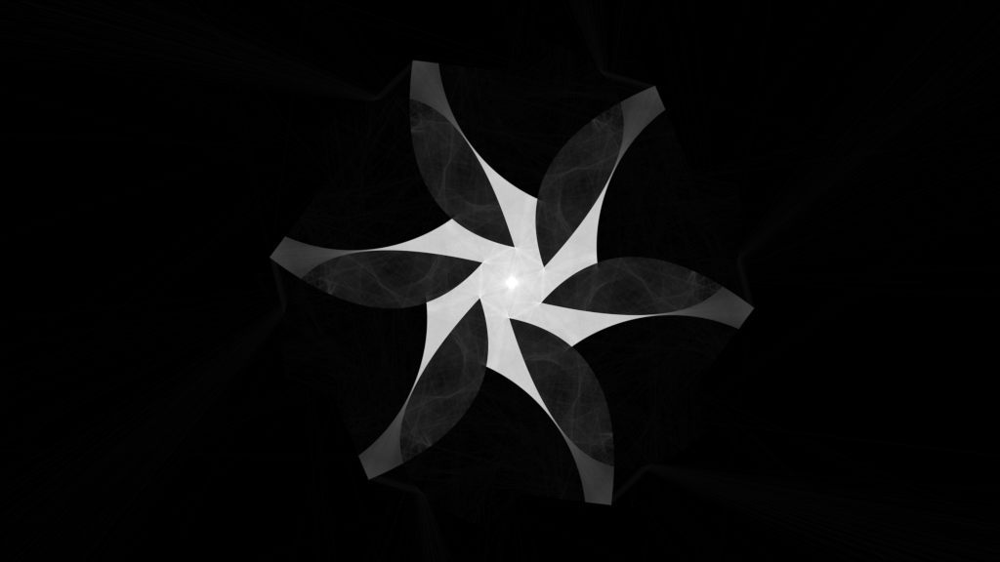
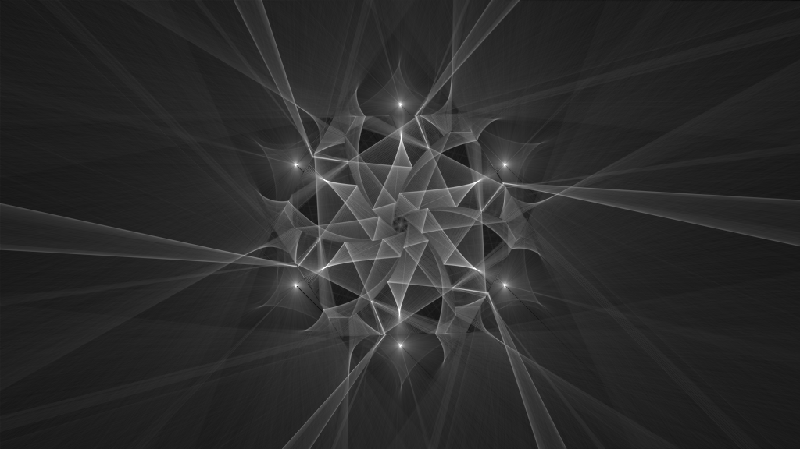
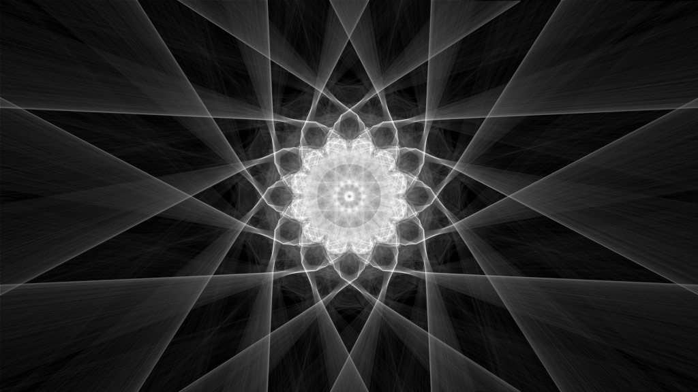
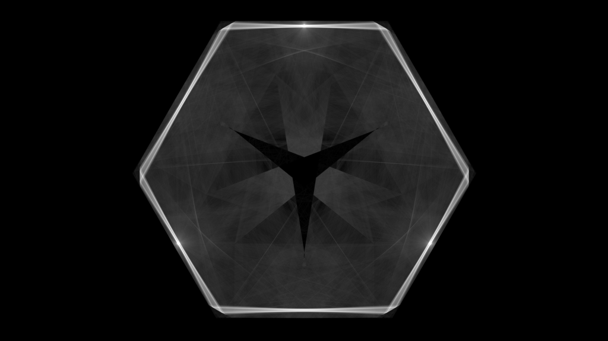
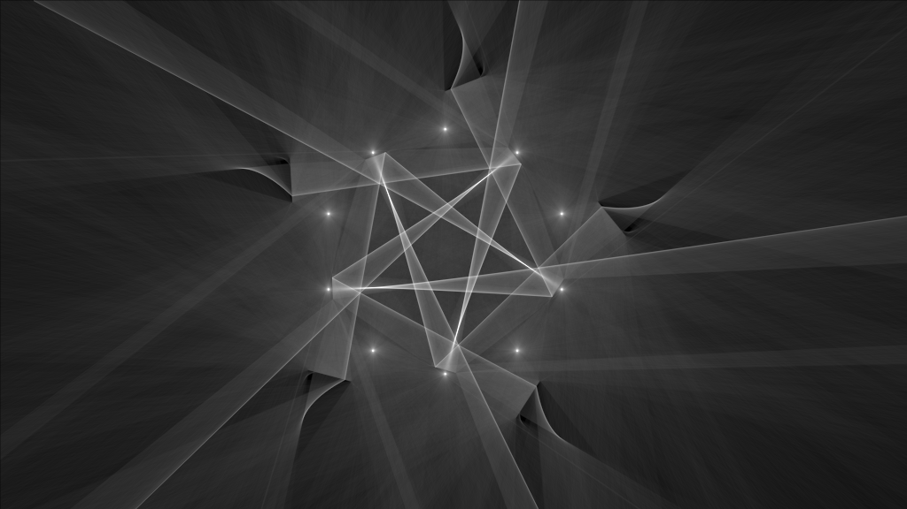

VėoLūz
I see light
VeoLuz is an exploration-focused playground and an artistic tool. It attempts to mimic the behavior of photons as they interact with barriers of various kinds − those that absorb light, those that reflect light, and those that refract light.





What you see rendered is the "trace" of those photons as they bounce around a two-dimensional world, colliding, reflecting, and refracting.
This project is heavily inspired by scanlime's Zen photon garden.